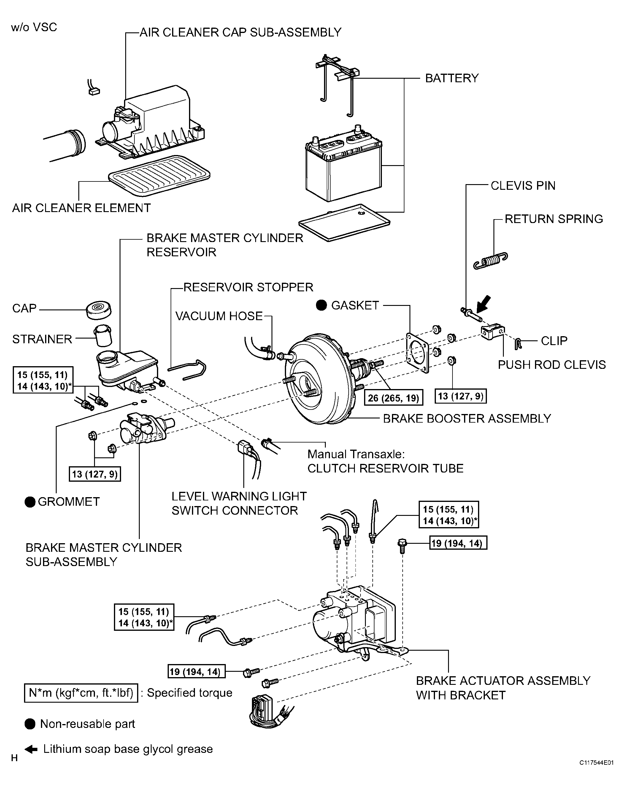
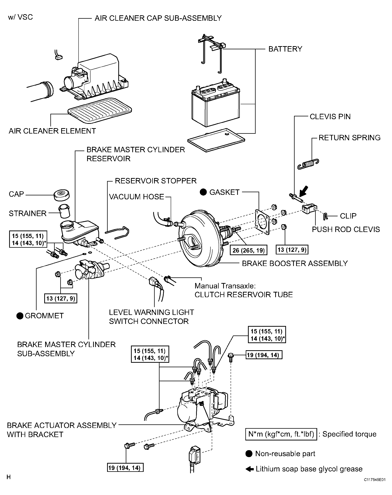

Brake Booster: Components
Fig 1: Identifying Brake Booster Components (1 Of 2)

Courtesy of © TOYOTA, LICENSE AGREEMENT TMS1002
Fig 2: Identifying Brake Booster Components (2 Of 2)

Courtesy of © TOYOTA, LICENSE AGREEMENT TMS1002